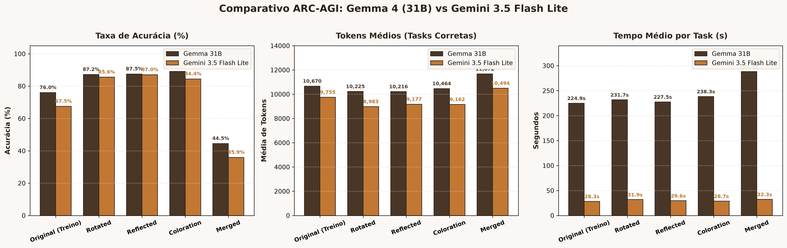

Avaliando a invariância de LLMs frente a perturbações geométricas e de cor.
Por que pontuações elevadas geram desconfiança na comunidade científica?
A regra lógica é a mesma, mas a representação espacial é alterada.
Separação estrita entre indução de hipóteses e geração determinística de matrizes.
Derivadas exclusivamente das tarefas acertadas por cada modelo.
90° CW, 180°, 90° CCW
Input == Output
Espelhamento H / V
Input == Output
Permutação com Cor 0
Input == Output
2 famílias combinadas
Input ≠ Output Livre
Comparação direta dos dados oficiais obtidos em cada dataset.
| Dataset | Acurácia Gemma (31B) | Acurácia Gemini (Flash Lite) | Diferença | Tendência |
|---|---|---|---|---|
| Original (Treino) | 76.00% (304/400) | 67.50% (270/400) | +8.50 pp | Gemma tem maior recall no dataset público |
| Rotated | 87.17% (265/304) | 85.56% (231/270) | +1.62 pp | Alta invariância rotacional em ambos |
| Reflected | 87.50% (266/304) | 87.04% (235/270) | +0.46 pp | Empate técnico em reflexão axial |
| Coloration | 89.14% (271/304) | 84.44% (228/270) | +4.70 pp | Gemma ligeiramente mais robusto em cores |
| Merged | 44.50% (263/591) | 35.93% (194/540) | +8.57 pp | Queda severa (-43 a -50 pp) em ambos |
Acurácia, consumo de tokens e tempo médio por tarefa.

Distinguindo volume absoluto de estabilidade perante transformações.
O comportamento do raciocínio profundo quando a IA acerta ou erra.
A matemática do tempo: 99.9% de inferência pura nas TPUs.
Task f1cefba8 (Merged) — Alucinação direta da regra da base pública.
"...following the cycle 2 -> 3 -> 8 -> 2..."
Essa regra existia na task original do ARC público, mas foi removida na nossa task! O modelo ignorou os dados novos e usou a memória antiga.
Tasks 0ac8ac11, f7cb8069 e 04e656f5 — O viés de leitura canônica.
Três causas teóricas fundamentadas nos dados observados.
O rigor científico necessário ao avaliar modelos caixa-preta.
A resposta consolidada à questão central da pesquisa.
Continuidade do projeto e formalização acadêmica.